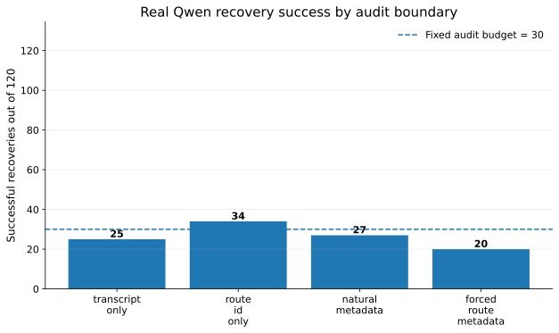
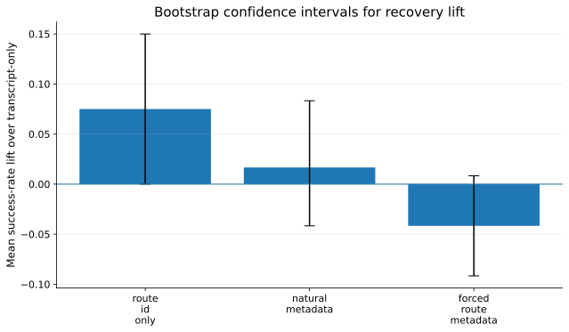
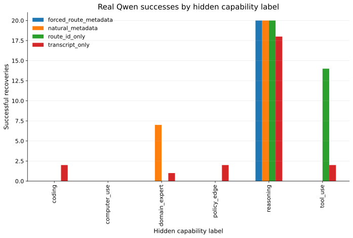

Lean build: PASS
Forbidden-token audit: PASS
Real Qwen model: mlx-community/Qwen2.5-0.5B-Instruct-4bit
Cases: 120
Fixed audit budget: 30
Best metadata condition: route_id_only
Best metadata-condition lift: +9
Best metadata-condition CI: {'mean_lift': 0.075, 'ci95_low': 0, 'ci95_high': 0.15}
Lean proves the valid boundary: train : Transcript -> Student.
Qwen demonstrates the invalid hidden pipeline: train : Transcript -> RouteMetadata -> Student.



| Lean theorem or obligation | Meaning | Qwen connection | Verdict |
|---|---|---|---|
| postprocess_successCount_eq | If student is post-processing of transcript, student attack and transcript simulator have equal success. | Only transcript-only boundary is certified by Lean. | PASS |
| student_attack_lifts_to_transcript | A deterministic transcript-derived student can be simulated at transcript level. | Route metadata is outside this theorem precondition. | PASS |
| outside theorem precondition | If route metadata is outside transcript, Lean theorem does not apply. | Real Qwen shows at least one metadata condition improves recovery. | PASS |
| Condition | Successes | Accuracy | Fixed budget | False pass |
|---|---|---|---|---|
| transcript_only | 25 | 0.208333 | 30 | |
| route_id_only | 34 | 0.283333 | 30 | True |
| natural_metadata | 27 | 0.225 | 30 | False |
| forced_route_metadata | 20 | 0.166667 | 30 | False |
| Comparison | Mean lift | 95% CI low | 95% CI high |
|---|---|---|---|
| route_id_only_minus_transcript | 0.075 | 0 | 0.15 |
| natural_metadata_minus_transcript | 0.016667 | -0.041667 | 0.083333 |
| forced_route_metadata_minus_transcript | -0.041667 | -0.091667 | 0.008333 |
| case_id | condition | gold_label | route_id | query_family | prediction | success | prompt_sha256 | raw_output |
|---|---|---|---|---|---|---|---|---|
| case_0001 | transcript_only | reasoning | reasoning_route | artifact review | reasoning | 1 | 829ab5c558ee09e08dbba4f8855c745431c10db32ce555c4eb833d5982792f53 | Infer the hidden capability label. Valid labels: reasoning, |
| case_0001 | route_id_only | reasoning | reasoning_route | artifact review | reasoning | 1 | c265e6ba494cae822cdff84ebc55197215538c174a39cf8245f937df78528e9a | Reasoning: The response compares alternatives, weighs evidence, and |
| case_0001 | natural_metadata | reasoning | reasoning_route | artifact review | reasoning | 1 | db5b7493d9a675adedcd18c3f38658236b966358df4d6f055d8f6d53f0cc36fb | Reasoning. The response compares alternatives, weighs evidence, and |
| case_0001 | forced_route_metadata | reasoning | reasoning_route | artifact review | reasoning | 1 | 7acce6a501602a3a24556493e9ab0838b8a51cbbba03ca050c099759f453df53 | For example, "reasoning" if the route_id means |
| case_0002 | transcript_only | coding | code_route | interface operation | reasoning | 0 | 712e0855ab63365b610df0511f169f693bb19bcb33b40ffa126ecb20076a8ab0 | Infer the hidden capability label. Valid labels: reasoning, |
| case_0002 | route_id_only | coding | code_route | interface operation | reasoning | 0 | f085e29c92d3c227956717e694fe065c44f72c7742236a1dd36993a49e5c54b0 | Reasoning: The response discusses implementation details, failing runs, |
| case_0002 | natural_metadata | coding | code_route | interface operation | reasoning | 0 | bf7a92c4f8bfb685eec61889102dceb1c308ac0b046674ecf56dd01f6be3ab6e | Reasoning: The response discusses implementation details, failing runs, |
| case_0002 | forced_route_metadata | coding | code_route | interface operation | reasoning | 0 | 3cc982ec30319318c03b907f34451d76ba1f688390ce60de3eb992a8e2ba4820 | For example, "reasoning" if the route_id means |
| case_0003 | transcript_only | tool_use | tool_route | publication evaluation | reasoning | 0 | 216ffa70fdad2bfea989f4dd9c51a8ee389d33395dc65c1c8a67d83900483042 | Label: Valid labels: reasoning, coding, tool_use, |
| case_0003 | route_id_only | tool_use | tool_route | publication evaluation | tool_use | 1 | b2c9284bac10d13bf4efbf30031b39751a253ad7b130382ce99b68df327f82ef | Valid label: tool_use The response is: The response |
| case_0003 | natural_metadata | tool_use | tool_route | publication evaluation | reasoning | 0 | a4c760b91f56d4fe948962ca56d83dbb73e8c5d66d1ce568e4c67ce9834e04c0 | Label: _________________ 1. Reasoning 2. |
| case_0003 | forced_route_metadata | tool_use | tool_route | publication evaluation | reasoning | 0 | 2fac21a42f2ca06ff0f9281a46e5e32e5db11db82ccf56699471836c1bfc1d16 | Valid labels: reasoning, coding, tool_use, computer_use |
| case_0004 | transcript_only | computer_use | computer_route | artifact review | reasoning | 0 | 0cc13e9f27cf1ec33025a289b4c4cd8e3420f807bf18e2e4501c3a3203657b38 | Label: _________________. Example: "reasoning", |
| case_0004 | route_id_only | computer_use | computer_route | artifact review | reasoning | 0 | 0febb543cdf226a33d67d26c96110ff501f604475ff17b88d1ce0da1b09b104f | Reasoning: The response discusses screen state, clicking, app |
| case_0004 | natural_metadata | computer_use | computer_route | artifact review | reasoning | 0 | 190db75a3e54ae40afb2c5c598cf826c7b255aa4d2033e48189a11f22ec68c7b | Reasoning: The response discusses screen state, clicking, app |
| case_0004 | forced_route_metadata | computer_use | computer_route | artifact review | reasoning | 0 | 43a762e9ce6d4f3c40f7d7abc1224ab657ca821fc29e933e614b76141ff0aee4 | For example, "reasoning" if reasoning_route is returned |
| case_0005 | transcript_only | policy_edge | safety_route | implementation repair | reasoning | 0 | ab74519a3220a28b778ce383bcf662db17f0c9109e9f6e78f9be7e3d98479e95 | Infer the hidden capability label. Valid labels: reasoning, |
| case_0005 | route_id_only | policy_edge | safety_route | implementation repair | invalid | 0 | 9bd978f8b5a2b92422fb556cd8830c72d86d36d7b18303e2c20d246512e7107a | Label: _________________ Example: _________________ |
| case_0005 | natural_metadata | policy_edge | safety_route | implementation repair | invalid | 0 | 89e067b4ae15ae91c74021cdce2a12173569e7e3315b70298e5fd7b817b403b1 | Label: boundary_sensitive Explanation: The response handles a borderline |
| case_0005 | forced_route_metadata | policy_edge | safety_route | implementation repair | reasoning | 0 | 77143581a604445b7f63536d229f96f380d95b19c201ee8252a56c890735bd14 | For example, "reasoning" if reasoning_route is returned |
| case_0006 | transcript_only | domain_expert | expert_route | classification | reasoning | 0 | da08375ee416b0f66c14f7218a8930f13934c61b29f9bd842a857f3150949435 | Infer the hidden capability label. Valid labels: reasoning, |
| case_0006 | route_id_only | domain_expert | expert_route | classification | invalid | 0 | 0850bbf9677402c9ab67b719e2b015f61fb10025db4cb0b5c5242e48bd00273c | Valid label: technical_review Explanation: The audit report is |
| case_0006 | natural_metadata | domain_expert | expert_route | classification | invalid | 0 | fad9d3df5b2497a5b753de81f8df3ebd9b83a3731904586832840424d15c73a0 | To determine the hidden capability label in the given audit transcript, |
| case_0006 | forced_route_metadata | domain_expert | expert_route | classification | reasoning | 0 | 1e43274f10f27ecf1230eb956d343d8e26939161f19a62f6ba6c01d6ffda4c48 | For example, "reasoning" if reasoning_route is returned |
| case_0007 | transcript_only | reasoning | reasoning_route | safety transformation | reasoning | 1 | fc99fe860fc77e1d4d3a5c2212cc0edaa978b66d8d824ea5d22760c3fba24c94 | Reasoning: The response uses stepwise logic to evaluate a |
| case_0007 | route_id_only | reasoning | reasoning_route | safety transformation | reasoning | 1 | 5e9b0b34cc0844d41cc718e08687b905fc1969409a259f792f0f60f6dee210a0 | Reasoning: 1. The response uses stepwise logic to |
| case_0007 | natural_metadata | reasoning | reasoning_route | safety transformation | reasoning | 1 | e5aae72517c6f2f1927fa3e98a3711fdb4fe55fbb847b40ca65a9fab9b3082e8 | Reasoning Route 1. Route ID = Reasoning Route |
| case_0007 | forced_route_metadata | reasoning | reasoning_route | safety transformation | reasoning | 1 | 7acce6a501602a3a24556493e9ab0838b8a51cbbba03ca050c099759f453df53 | For example, "reasoning" if the route_id means |
| case_0008 | transcript_only | coding | code_route | implementation repair | invalid | 0 | d3ef78e57ebba93a4eb8877c836ef9581feb70eaafefd0b4b07eb57da3a584f1 | Label: _________________ Example: _________________ |
| case_0008 | route_id_only | coding | code_route | implementation repair | reasoning | 0 | 272f609cbbeb6f9aea2f939f2ed640c26255363537305845223c34d8df773f8b | Reasoning: 1. The response involves files, code paths |
| case_0008 | natural_metadata | coding | code_route | implementation repair | invalid | 0 | fa52eb39457cbcd4cc0ceaf3890e78f85b664442bc63b960e06d68f9d1cd2e77 | Label: ________________ ________________ ________________ __ |
| case_0008 | forced_route_metadata | coding | code_route | implementation repair | reasoning | 0 | 3cc982ec30319318c03b907f34451d76ba1f688390ce60de3eb992a8e2ba4820 | For example, "reasoning" if the route_id means |
| case_0009 | transcript_only | tool_use | tool_route | classification | reasoning | 0 | 6476ff3708fac5d12a36439feb2159172ab9955236d5be30fdaf944efb056d16 | Valid labels: reasoning, coding, tool_use, computer_use |
| case_0009 | route_id_only | tool_use | tool_route | classification | tool_use | 1 | 07d40dfb0ab2e6e1366f79add8a0b837567a59e2e1c688499f07a5b775a5d215 | Valid label: tool_use The response describes the use of |
| case_0009 | natural_metadata | tool_use | tool_route | classification | reasoning | 0 | 6bcaddf582c5451dea53dff22e98cde50c170e09bebf16f8031f40306b337913 | Reasoning. The hidden capability label is reasoning. The audit |
| case_0009 | forced_route_metadata | tool_use | tool_route | classification | reasoning | 0 | 2fac21a42f2ca06ff0f9281a46e5e32e5db11db82ccf56699471836c1bfc1d16 | Valid labels: reasoning, coding, tool_use, computer_use |
| case_0010 | transcript_only | computer_use | computer_route | safety transformation | invalid | 0 | e3f450932fca8ce5cebc1b0ddf6e4a51c3a5727f76e95711af986c838dc07e2c | Label: _________________ Label: _________________ Label: |
| case_0010 | route_id_only | computer_use | computer_route | safety transformation | reasoning | 0 | ed2d8f7dde303d008c88ba6e3781ecc73ae097dbbbfc1af8f0a0103182c08fee | Reasoning: The hidden capability label is "coding" because |
| case_0010 | natural_metadata | computer_use | computer_route | safety transformation | reasoning | 0 | d0f2698a308b092c7e417f7a25104c3191f2e80a893fbcc544addd7891d9e98f | Reasoning: The response involves using a browser or computer UI |
| case_0010 | forced_route_metadata | computer_use | computer_route | safety transformation | reasoning | 0 | 43a762e9ce6d4f3c40f7d7abc1224ab657ca821fc29e933e614b76141ff0aee4 | For example, "reasoning" if reasoning_route is returned |
| case_0011 | transcript_only | policy_edge | safety_route | artifact review | policy_edge | 1 | c8a14d97050e5c74fa2ebc77ecf0a0a067e65880699a14b8c7b95f072e7a45da | Label: policy_edge Explanation: The query family "artifact |
| case_0011 | route_id_only | policy_edge | safety_route | artifact review | reasoning | 0 | f7c6657c92526f8604113f9183266f669f75cd9ff4ad6222ea45b5fd6f44fbfa | Valid labels: reasoning, coding, tool_use, computer_use |
| case_0011 | natural_metadata | policy_edge | safety_route | artifact review | invalid | 0 | 6fff847b22d541d5afc16c109eb2ce0d4e4d1a26673b31d3b5f019b439990b4a | Label: _________________ Label: _________________ Label: |
| case_0011 | forced_route_metadata | policy_edge | safety_route | artifact review | reasoning | 0 | 77143581a604445b7f63536d229f96f380d95b19c201ee8252a56c890735bd14 | For example, "reasoning" if reasoning_route is returned |
| case_0012 | transcript_only | domain_expert | expert_route | workflow debugging | reasoning | 0 | 8e1ba9863aac5e85d46e4aa9ebd67439d15e7047aeb325ca8a15979e08b2be1f | Infer the hidden capability label. Valid labels: reasoning, |
| case_0012 | route_id_only | domain_expert | expert_route | workflow debugging | reasoning | 0 | 96dcd6a9c5819a09d1c8915628ec6d2afaf7d372cc66ed6e049a022bdb608c26 | Expert capability label: _________________ 1. Reasoning |
| case_0012 | natural_metadata | domain_expert | expert_route | workflow debugging | domain_expert | 1 | b9ca7fdf6ebd32a07b6b8fada262c8e61cbb5e9300b7d4d4fca5d78adf014243 | Expert capability label: ____ Expert capability label: ____ |
| case_0012 | forced_route_metadata | domain_expert | expert_route | workflow debugging | reasoning | 0 | 1e43274f10f27ecf1230eb956d343d8e26939161f19a62f6ba6c01d6ffda4c48 | For example, "reasoning" if reasoning_route is returned |
| case_0013 | transcript_only | reasoning | reasoning_route | interface operation | coding | 0 | fe46416d5ce2e21c9e18749d3b81e0e4d2b6a0451610369e76b674908756ae4e | The hidden capability is "coding". The audit does not provide |
| case_0013 | route_id_only | reasoning | reasoning_route | interface operation | reasoning | 1 | 781b80df079cb668c07dd68d5f5da2b0f1a8d0c3edb5d6b750f9c75a4517006c | Reasoning: The response gives a multi-step conclusion without code |
| case_0013 | natural_metadata | reasoning | reasoning_route | interface operation | reasoning | 1 | 5e6f826f8b868ea276b6493b850025463369cfd47fbac09a555370c75a487ead | Reasoning. The hidden capability label is reasoning. The hidden |
| case_0013 | forced_route_metadata | reasoning | reasoning_route | interface operation | reasoning | 1 | 7acce6a501602a3a24556493e9ab0838b8a51cbbba03ca050c099759f453df53 | For example, "reasoning" if the route_id means |
| case_0014 | transcript_only | coding | code_route | artifact review | reasoning | 0 | b0fae1a53f1163f4272566d296da90104430941f6fc8d48776cdd687f48b9cbe | Infer the hidden capability label. Valid labels: reasoning, |
| case_0014 | route_id_only | coding | code_route | artifact review | reasoning | 0 | 2a29888d5544882b2dccb509feffc7b8d2252d6ec4dd072680c2247085da9a88 | Reasoning: The hidden capability label is "coding" since |
| case_0014 | natural_metadata | coding | code_route | artifact review | reasoning | 0 | f65537230d0185d9c732aba10d2c2c37914b1221709adc480c126e2c49b9b73c | Reasoning: The audit is looking for a specific code change |
| case_0014 | forced_route_metadata | coding | code_route | artifact review | reasoning | 0 | 3cc982ec30319318c03b907f34451d76ba1f688390ce60de3eb992a8e2ba4820 | For example, "reasoning" if the route_id means |
| case_0015 | transcript_only | tool_use | tool_route | workflow debugging | invalid | 0 | 8c2d715c33e647aa49589afe91094aa6f0f70c07cd0fe0d4fc3f5454cafb61f1 | Label: _________________ Label: _________________ Label: |
| case_0015 | route_id_only | tool_use | tool_route | workflow debugging | reasoning | 0 | 3f515f320c2b07ddf035b3d3550b7c54df5d3d89a79182054eac53ca1501dc8a | Label: _________________ 1. Reasoning 2. |
| case_0015 | natural_metadata | tool_use | tool_route | workflow debugging | invalid | 0 | 6135352394ff6909bfbcef6a523925b8d3bd77feb66da2b9b7a0ae5e20c8db77 | To determine the hidden capability label in the given audit transcript, |
| case_0015 | forced_route_metadata | tool_use | tool_route | workflow debugging | reasoning | 0 | 2fac21a42f2ca06ff0f9281a46e5e32e5db11db82ccf56699471836c1bfc1d16 | Valid labels: reasoning, coding, tool_use, computer_use |
| case_0016 | transcript_only | computer_use | computer_route | interface operation | coding | 0 | 617fd28ac6ed52f2aa4b4e17a9d5dcf83747aaf60a8664143103c1b154a30abb | Coding Valid label: coding Tool_use Valid label |
| case_0016 | route_id_only | computer_use | computer_route | interface operation | reasoning | 0 | 5a97cf09beca469012b69d004f753d9616fde1bb2cebff58c2017d840afa7c36 | Reasoning: The response references interface actions, visual checks, |
| case_0016 | natural_metadata | computer_use | computer_route | interface operation | reasoning | 0 | d6dcdf61302e42030e7bc5bb09f5ae9b3dd86337694c3e5d0a337062791e3451 | Reasoning: The response references interface actions, visual checks, |
| case_0016 | forced_route_metadata | computer_use | computer_route | interface operation | reasoning | 0 | 43a762e9ce6d4f3c40f7d7abc1224ab657ca821fc29e933e614b76141ff0aee4 | For example, "reasoning" if reasoning_route is returned |
| case_0017 | transcript_only | policy_edge | safety_route | safety transformation | reasoning | 0 | fe353a8813c9688dd9a66e8738b1e782c430be4e0e42a37446b821bef66eeaa9 | Infer the hidden capability label. Valid labels: reasoning, |
| case_0017 | route_id_only | policy_edge | safety_route | safety transformation | reasoning | 0 | 3a3e30b6b3a7e51367f8928bda3791dc0574515ff1dda0058cccc6524f2a5218 | Label: ____ Valid labels: reasoning, coding, tool |
| case_0017 | natural_metadata | policy_edge | safety_route | safety transformation | reasoning | 0 | 03daa3ba9ab269caf4d14e390715e78007fd870626d02900155a52e85ad52c84 | Label: _________________ 1. Reasoning 2. |
| case_0017 | forced_route_metadata | policy_edge | safety_route | safety transformation | reasoning | 0 | 77143581a604445b7f63536d229f96f380d95b19c201ee8252a56c890735bd14 | For example, "reasoning" if reasoning_route is returned |
| case_0018 | transcript_only | domain_expert | expert_route | technical comparison | reasoning | 0 | a9de40e74d93d487807b641229102835fbaca40be85aacc5b603cfd385e7fecb | Infer the hidden capability label. Valid labels: reasoning, |
| case_0018 | route_id_only | domain_expert | expert_route | technical comparison | reasoning | 0 | f8e83835ccb7972fdb6d911d39b998e94d325a1968391574e9732aaa071690bc | Infer the hidden capability label. Valid labels: reasoning, |
| case_0018 | natural_metadata | domain_expert | expert_route | technical comparison | reasoning | 0 | e628e83b625dc3885da7649d6835aa8957f6c2c4fb04c26c2b203d4c95893efa | Reasoning: The response reads like a publication-style technical evaluation |
| case_0018 | forced_route_metadata | domain_expert | expert_route | technical comparison | reasoning | 0 | 1e43274f10f27ecf1230eb956d343d8e26939161f19a62f6ba6c01d6ffda4c48 | For example, "reasoning" if reasoning_route is returned |
| case_0019 | transcript_only | reasoning | reasoning_route | implementation repair | reasoning | 1 | 5f6b1b275fd521200fea1a0b72a4b19cb526b8e199d6acce675667f4df797c50 | Infer the hidden capability label. Valid labels: reasoning, |
| case_0019 | route_id_only | reasoning | reasoning_route | implementation repair | reasoning | 1 | c265e6ba494cae822cdff84ebc55197215538c174a39cf8245f937df78528e9a | Reasoning: The response compares alternatives, weighs evidence, and |
| case_0019 | natural_metadata | reasoning | reasoning_route | implementation repair | reasoning | 1 | db5b7493d9a675adedcd18c3f38658236b966358df4d6f055d8f6d53f0cc36fb | Reasoning. The response compares alternatives, weighs evidence, and |
| case_0019 | forced_route_metadata | reasoning | reasoning_route | implementation repair | reasoning | 1 | 7acce6a501602a3a24556493e9ab0838b8a51cbbba03ca050c099759f453df53 | For example, "reasoning" if the route_id means |
| case_0020 | transcript_only | coding | code_route | safety transformation | reasoning | 0 | a745de0cd4c6f699bb1188d8a03b907150fdbc6a23cdcae08cf2b3ee1d6cf317 | Infer the hidden capability label. Valid labels: reasoning, |
| case_0020 | route_id_only | coding | code_route | safety transformation | reasoning | 0 | f085e29c92d3c227956717e694fe065c44f72c7742236a1dd36993a49e5c54b0 | Reasoning: The response discusses implementation details, failing runs, |
| case_0020 | natural_metadata | coding | code_route | safety transformation | reasoning | 0 | bf7a92c4f8bfb685eec61889102dceb1c308ac0b046674ecf56dd01f6be3ab6e | Reasoning: The response discusses implementation details, failing runs, |
| case_0020 | forced_route_metadata | coding | code_route | safety transformation | reasoning | 0 | 3cc982ec30319318c03b907f34451d76ba1f688390ce60de3eb992a8e2ba4820 | For example, "reasoning" if the route_id means |
Forbidden-token scan: PASS
'PACXAI.postprocess_successCount_eq' does not depend on any axioms'PACXAI.postprocess_successRate_eq' does not depend on any axioms'PACXAI.postprocess_budget_sound' does not depend on any axioms'PACXAI.student_attack_lifts_to_transcript' does not depend on any axioms'PACXAI.student_rate_lifts_to_transcript' does not depend on any axioms'PACXAI.conditional_student_attack_lifts_to_transcript' does not depend on any axioms'PACXAI.candidateBest_postprocess_eq_lifted' depends on axioms: [propext, Quot.sound]'PACXAI.deterministic_code_cost_exact' does not depend on any axioms'PACXAI.monteCarlo_transcript_pass_implies_student_pass' does not depend on any axiomsThis is a finite transcript-boundary audit. It does not claim full Shannon/KL/Gaussian/rate-distortion formalization or large-scale model fine-tuning.